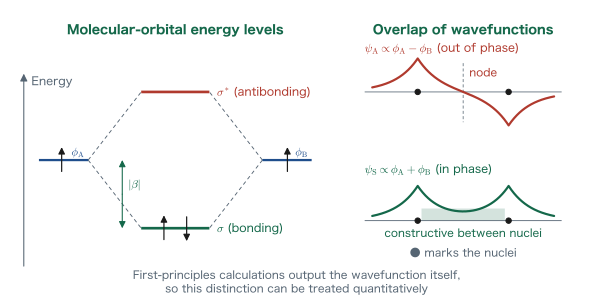
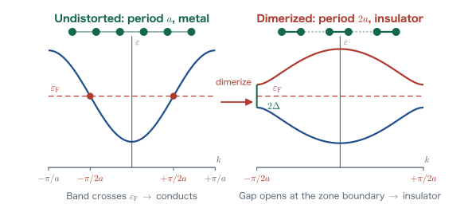
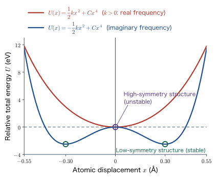

Chapter 1Computational Science Applied to Materials and the Physical Quantities It Yields
This book deals with the endeavor of predicting, on paper and on a computer, what properties a substance will show, starting only from the information of “how the atoms are arranged.” Chapter 1 is the chapter in which we survey the whole picture. Even within computational science, completely different methods are used depending on the scale of the object, from methods that treat the size of a single atom ($10^{-10}\ \mathrm{m}$) to those that treat bridges and buildings ($10^{2}\ \mathrm{m}$). In this chapter we first draw a map of scales, and then introduce the central methods at the atomic scale: first-principles calculations, molecular dynamics calculations, and the Monte Carlo method. Next, we organize what comes out when a crystal structure is given as input into three types, “Type 1: total energy,” “Type 2: electronic bands,” and “Type 3: phonon bands,” and confirm them with examples from actual materials research. Mathematical formulas appear in earnest from Chapter 2 onward, but even in this chapter we solve the equation of motion of simple harmonic motion completely. From it we will understand that the seemingly puzzling situation in which the frequency becomes imaginary is in fact a powerful prediction that “the structure is unstable.”
- The standpoints of materialism and reductionism, and the basic scheme of computational science, “Input = crystal structure, Output = properties”
- The hierarchy of length scales of materials phenomena (atomic, meso, and macro), and the correspondence with the computational methods used at each scale
- What each of first-principles calculations, molecular dynamics calculations, the Monte Carlo method, the phase-field method, and the finite-element method actually computes
- Type 1: that from the total energy $E_{\mathrm{tot}}$ we can discuss the stability of crystal polymorphs, the search for new materials, surface energies, and the dissociation of molecules
- Type 2: that from the electronic bands we can read off whether a material is a metal or an insulator, and whether an orbital is bonding or antibonding, as shown by the signs of the crystal orbital Hamilton population (COHP), the crystal orbital overlap population (COOP), and the crystal orbital bond index (COBI)
- Type 3: that the phonon bands give the frequency $\omega=\sqrt{k/m}$, that for $k\lt 0$ it becomes the imaginary frequency $\omega=i\sqrt{\abs{k}/m}$, and the physical meaning of this
- Solving completely, with initial conditions, the equations of motion of simple harmonic motion $m\ddot{x}=-kx$ and $m\ddot{x}=+kx$, and obtaining the $\sin$ solution and the $\sinh$ solution
- How the 14 chapters of this book connect to lead from “quantum-chemical calculations of molecules” to “the electronic states of solids”
1.1 Why Study Computational Science? — Deducing Properties from the Arrangement of Atoms
1.1.1 Materialism and reductionism
As you read through this book, please keep the following idea in the back of your mind.
In other words, the question is “if we arrange which elements in which way, what properties will appear?” Two keywords support this standpoint: materialism and reductionism. Materialism is the standpoint that phenomena occurring in the material world are explained by the constitution and motion of matter itself, and reductionism is the standpoint that tries to understand the behavior of a complex system by decomposing it into its constituent elements and their interactions.
Translated into materials science, it goes like this. Whether a substance is hard or soft, whether it conducts electricity or not, whether it glows red or not—all of these should be explainable by reducing them to the nuclei and electrons that make up the substance and the interactions acting among them. And the laws governing the interactions between nuclei and electrons were already written down in the first half of the twentieth century as quantum mechanics. That is, in principle, once the crystal structure is given, the properties come out simply by solving the equations.
Why? Why may we take only “the arrangement of atoms” as the input?
The components of a substance are nuclei and electrons. Once the kinds of nuclei (= the elements) and their positions are fixed, the electrostatic potential felt by the electrons is completely determined. Then the Schrödinger equation obeyed by the electrons is fixed, and in principle the state of the electrons is entirely determined. That is, the information of “which element's nucleus is where” is the one and only input required to specify a substance. This is the starting point of computational science, and the reason why a single input, “the crystal structure (or the molecular structure for a molecule),” suffices. The Born–Oppenheimer approximation, which we study in Chapter 8, is the approximation that justifies this procedure of “fixing the positions of the nuclei first.”
1.1.2 Input is the crystal structure, output is the properties
Rewritten in the language of computation, this idea becomes the following simple scheme.
What is important here is that no experimental values are used at all in the input. All we use are the kinds of elements (atomic numbers), the positions of the atoms, and the physical constants (the electron mass $m$, the elementary charge $e_0$, the permittivity of the vacuum $\varepsilon_0$, and the Planck constant $h$). Because no experimentally measured quantities are supplied as parameters, this kind of calculation is called a first-principles calculation (or an ab initio calculation). “First principles” means “starting only from the fundamental laws.”
1.1.3 An introductory example: diamond and graphite
There is an example that could hardly be better suited to convey the power of this scheme: diamond and graphite. The two are made of exactly the same carbon and nothing else. The only element contained is $\mathrm{C}$, and the chemical formula of both is $\mathrm{C}$. Only the arrangement differs.
- Diamond: each carbon atom bonds to four neighboring carbons in a regular tetrahedral arrangement through $\mathrm{sp}^3$ hybrid orbitals, forming a three-dimensional covalent network. The bond length is $1.54\times10^{-10}\ \mathrm{m}$.
- Graphite: each carbon atom bonds to three neighboring carbons in a planar hexagonal arrangement through $\mathrm{sp}^2$ hybrid orbitals, forming sheets (graphene layers). The bond length within a layer is short and strong at $1.42\times10^{-10}\ \mathrm{m}$, but the layers are separated by $3.35\times10^{-10}\ \mathrm{m}$ and are stacked together only by the weak van der Waals force (Chapter 13).
This “difference in arrangement” alone changes the properties dramatically. Diamond is the hardest of all known substances, is colorless and transparent, and is an insulator that hardly conducts electricity. Graphite, on the other hand, is so soft that it slides over paper as a pencil lead, is black and opaque, and conducts electricity well in directions parallel to the layers. The word “allotrope” does not explain this contrast. We want to explain why this happens by deducing it from the arrangement of atoms. That is the job of computational science.
Caution: Is graphite a “metal” or a “semimetal”?
In the lecture we sometimes say, for brevity, that “graphite is a metal,” but more precisely it is a semimetal. A semimetal is a substance in which no band gap is open (or the gap is negative), but whose density of states at the Fermi level is smaller than that of an ordinary metal by orders of magnitude. The overlap between the valence band and the conduction band of graphite is at most about $0.04\ \mathrm{eV}$, and its carrier density is 4–5 orders of magnitude smaller than that of a typical metal such as copper. In addition, the electrical conductivity in directions parallel to the layers is $10^{3}$ to $10^{4}$ times that perpendicular to the layers, so it is strongly anisotropic. In this book we call graphite metallic when we want to emphasize that “no gap is open, so it can conduct electricity,” and write semimetal where a strict classification is needed.
1.1.4 The three pillars of theory, experiment, and computation
Here we want to confirm where computational science stands within the enterprise of science. For a long time the natural sciences advanced on two pillars, theory and experiment. Theory deals with problems that can be solved with paper and pencil, and experiment questions nature directly. However, the equations of quantum mechanics cannot be solved analytically except in very limited cases such as the hydrogen atom (Chapter 2). Experiments, on the other hand, are limited by the cost of preparing samples, by the handling of hazardous materials and rare elements, and by the fact that “why it happens” is not directly visible.
Computation is the third pillar that fills the gap between these two. It solves numerically the equations that cannot be solved analytically, and extracts quantities that cannot be extracted from experiments (for example, how much a single chemical bond in a crystal lowers the energy). Moreover, it can even answer in advance, for a substance that no one has yet synthesized, the question “what would happen if we made it?” The search for new materials introduced in Section 1.5 is precisely such an example.
1.2 Thinking About Materials Phenomena in Terms of Scale
1.2.1 Length scales and academic disciplines
When you think about phenomena involving materials, I would like you to acquire the habit of thinking about scale first. Even when we use the same word “materials,” the theories and methods we need are completely different depending on whether the problem concerns the inside of a single atom, an aggregate of crystal grains, or a structure such as a bridge or a turbine blade.
If we trace length scales in powers of $10$, the following hierarchy comes into view. And to each level of the hierarchy corresponds an academic discipline for which that level is the main arena.
Math Note: How to read the numbers of the scales
In the schematic diagram used in the lecture, $10^{-12}\ \mathrm{m}$ is written at the position of the atom, but this is only a rough guide that refers to “the region including the internal structure of the atom.” Let us pin down the numbers properly. The diameter of the nucleus is $10^{-15}$–$10^{-14}\ \mathrm{m}$ (femtometers), and the diameter of an atom is about $10^{-10}\ \mathrm{m}$. This length of $10^{-10}\ \mathrm{m}$ has a dedicated unit, the ångström ($1\ \text{Å}=10^{-10}\ \mathrm{m}$), which is used extremely often in materials science. The Bohr radius of the hydrogen atom (Chapter 2), $a_0 = \dfrac{\varepsilon_0 h^2}{\pi m e_0^2} = 0.529\times10^{-10}\ \mathrm{m} = 0.529\ \text{Å}$, serves as the natural yardstick of the atomic scale. Although the nucleus and the atom differ in size by as much as five orders of magnitude, it is thanks to this gap that chemistry and materials science can do without any concern for what is inside the nucleus.
1.2.2 Correspondence between scales and computational methods
When the scale changes, what we regard as a “particle” changes in the first place. At the atomic scale we deal with electrons and nuclei. At the mesoscale we give up tracking individual atoms and deal with fields of an order parameter, such as “which phase is this region in?” or “which way does the polarization point?” At the macroscale we regard matter as a continuum and deal with stress and strain. Corresponding to this change of viewpoint, the methods we use are matched as follows.
| Scale | Method | Object treated | Typical size | Main output |
|---|---|---|---|---|
| Atomic $10^{-10}$–$10^{-8}\ \mathrm{m}$ | First-principles calculation (DFT) | Electron density, nuclear positions | $10^{2}$–$10^{3}$ atoms, 0 K | Total energy, electronic bands, phonons |
| First-principles molecular dynamics | Motion of electrons and nuclei | $10^{2}$ atoms, $10\ \mathrm{ps}$ | Finite-temperature structures, diffusion, phase transitions | |
| Classical molecular dynamics | Atoms (point particles) | $10^{6}$–$10^{9}$ atoms, $\mathrm{ns}$–$\mu\mathrm{s}$ | Thermal expansion, viscosity, mechanical properties | |
| Monte Carlo method | Configurations, spins, occupations | $10^{4}$–$10^{6}$ sites | Phase diagrams, order–disorder transitions, solid solutions | |
| Meso $10^{-8}$–$10^{-4}\ \mathrm{m}$ | Phase-field method | Field of the order parameter | $\mu\mathrm{m}$ region, $\mathrm{s}$ | Microstructure formation, domain motion, precipitation |
| Dislocation dynamics | Dislocation lines | $\mu\mathrm{m}$ region | Work hardening, yielding | |
| Macro $10^{-4}$–$10^{0}\ \mathrm{m}$ | Finite-element method | Continuum (assembly of elements) | $\mathrm{mm}$–$\mathrm{m}$, $10^{6}$ elements | Stress distribution, deformation, vibration, fracture |
Example 1.1: Realizing how “small” an atomic-scale calculation is
The density of silicon (Si) is $2.33\ \mathrm{g/cm^3}$, and its molar mass is $28.09\ \mathrm{g/mol}$.
(1) Find the number of atoms contained in $1\ \mathrm{cm^3}$ of Si.
(2) If a first-principles calculation can handle at most $10^{3}$ atoms, what is the edge length, in nm, of the cube to which this corresponds?
Solution. (1) The amount of substance per unit volume is $2.33/28.09 = 8.29\times10^{-2}\ \mathrm{mol/cm^3}$. Multiplying by the Avogadro constant $N_{\mathrm{A}}=6.022\times10^{23}\ \mathrm{mol^{-1}}$ gives
$$ n = 8.29\times10^{-2}\times 6.022\times10^{23} = 4.99\times10^{22}\ \mathrm{cm^{-3}} \simeq 5.0\times10^{22}\ \text{atoms}/\mathrm{cm^3}. $$(2) The volume occupied by $10^{3}$ atoms is $V = 10^{3}/(4.99\times10^{22}) = 2.00\times10^{-20}\ \mathrm{cm^3}$. The edge length is
$$ L = V^{1/3} = (2.00\times10^{-20})^{1/3}\ \mathrm{cm} = 2.71\times10^{-7}\ \mathrm{cm} = 2.71\ \mathrm{nm}. $$In other words, what a first-principles calculation can handle directly is merely a tiny cube with an edge of less than $3\ \mathrm{nm}$. If we tried to calculate an entire $1\ \mathrm{cm^3}$ sample, the number of atoms would increase by a factor of $10^{19}$, and since the amount of computation grows as the cube of the number of atoms, the effort would increase by a factor of $10^{57}$. This is a number that no increase in computer speed could ever reach. This is precisely why we must divide the scales and use methods suited to each scale. This is the meaning of Table 1.1 and Figure 1.3.
Math Note: A little digression—the journal Physical Review
Many papers will be cited from now on in this chapter, and a considerable fraction of them appeared in the journal Physical Review. It is one of the most authoritative groups of journals in physics, and landmark papers related to this book are gathered there. For example—
- E. Schrödinger, "An Undulatory Theory of the Mechanics of Atoms and Molecules", Phys. Rev. 28, 1049 (1926): the Schrödinger equation, the protagonist from Chapter 2 of this book onward. Nobel Prize in Physics, 1933.
- J. Bardeen, L. N. Cooper, J. R. Schrieffer, "Theory of Superconductivity", Phys. Rev. 108, 1175 (1957): the BCS theory of superconductivity. Nobel Prize in Physics, 1972.
- W. Kohn, L. J. Sham, "Self-Consistent Equations Including Exchange and Correlation Effects", Phys. Rev. 140, A1133 (1965): the foundation of the first-principles calculations introduced in Section 1.3 of this chapter. Nobel Prize in Chemistry, 1998.
- B. P. Abbott et al. (LIGO), "Observation of Gravitational Waves from a Binary Black Hole Merger", Phys. Rev. Lett. 116, 061102 (2016): the first observation of gravitational waves. Nobel Prize in Physics, 2017.
Every one of these was “just a single paper” when it was published. It is worth keeping in mind that the equations in textbooks, too, have a first day on which they came into the world.
1.3 Computational Methods at the Atomic Scale
From here on, we introduce the atomic-scale methods that are the main battleground of this book, narrowing them down to three representative ones—first-principles calculations, molecular dynamics calculations, and the Monte Carlo method. We first want you to see that “computational science” really covers a wide variety of approaches.
1.3.1 First-principles calculations based on density functional theory
Definition: First-principles calculations
A general term for methods that compute the properties of matter from only the fundamental laws of quantum mechanics and physical constants, without using experimental values as parameters. In present-day materials science, a first-principles calculation almost always means a calculation based on density functional theory (DFT). Density functional theory is a theory that expresses quantities such as the kinetic energy and the potential energy not through the many-electron wave function but as functions (more precisely, functionals) of the electron density $\rho(\bm{r})$. The Input is the crystal structure and the Output is a variety of physical properties; the method mainly yields static properties at absolute zero.
There is no need to be intimidated by the word “functional.” If a function is a rule that maps a number to a number, then a functional is a rule that maps a function to a number. The correspondence in which feeding in a function, the electron density $\rho(\bm{r})$, yields a single number, the total energy, is the functional $E[\rho]$. The foundation of this theory was laid in the Kohn–Sham paper cited earlier (1965), and W. Kohn received the Nobel Prize in Chemistry in 1998. The content of the theory goes beyond the scope of this book, but the entry points to it—the variational principle (Chapter 3), the Slater determinant and exchange energy (Chapters 7 and 9), and the Born–Oppenheimer approximation (Chapter 8)—are treated carefully, one by one, in this book.
Here are some representative examples of the physical quantities that first-principles calculations actually provide.
| Physical quantity | What it tells us | Related |
|---|---|---|
| Total energy $E_{\mathrm{tot}}$ | Which of the crystal polymorphs is stable | Section 1.5, Chapter 9 |
| Formation energy and chemical-potential-dependent phase diagram | Which phase appears at which composition and in which atmosphere | Section 1.5 |
| Defect formation energy | How readily vacancies and impurities enter, and what their charge states are | Section 1.5 |
| Optical absorption coefficient $\alpha(h\nu)$ | Which wavelengths of light are absorbed and emitted | Section 1.5 |
| Electronic band structure | Whether the material is a metal or an insulator, and the size of the band gap | Section 1.6, Chapter 14 |
| COHP, COOP, COBI | Whether each individual chemical bond is bonding or antibonding | Section 1.6, Appendix 1.A |
| Phonon band | Whether the structure is dynamically stable, and what the vibrational frequencies are | Section 1.7 |
| Thermal expansion coefficient and bulk modulus | How much the material expands when heated, and how much it contracts when compressed | Section 1.7 |
The bottom two rows of Table 1.2—the thermal expansion coefficient and the bulk modulus—seem at first glance to be “finite-temperature quantities” or “mechanical quantities” that a static calculation at 0 K could not yield. However, if we compute the total energy as a function of volume, we obtain the bulk modulus $B = V\,\partial^2 E/\partial V^2$, and if we go further and compute the volume dependence of the phonon frequencies, we obtain the thermal expansion coefficient. Knowing the total energy and the vibrational states at 0 K puts even finite-temperature thermodynamic quantities within reach. As a concrete example, there is a study that obtained the volumetric thermal expansion coefficients and bulk moduli of MgO and CaO from first-principles calculations [J. Phys. Chem. C 128, 525 (2024)]. As for the calculation of defect formation energies, a classic study on ZnO [Phys. Rev. B 77, 245202 (2008)] is well known; it discusses quantitatively which defects become stable in which charge states in an oxygen-rich (O-rich) atmosphere and in an oxygen-poor (O-poor) atmosphere.
1.3.2 Molecular dynamics calculations
Definition: Molecular dynamics (MD) calculations
A method that numerically integrates Newton's equation of motion $M_I \ddot{\bm{R}}_I = \bm{F}_I$ in time for each atom and tracks the atomic trajectories, thereby computing mainly dynamic properties (at finite temperature). It divides into the following two kinds, depending on how the force $\bm{F}_I$ acting on the atoms is obtained.
- Classical MD calculation: The forces are computed from an interatomic potential model whose functional form is fixed in advance (Lennard-Jones type, embedded-atom method, Buckingham type, etc.). Since each step is cheap, one can follow $10^{6}$ or more atoms for times from $\mathrm{ns}$ to $\mu\mathrm{s}$.
- First-principles MD calculation (ab initio MD, AIMD): The electronic state is solved anew by a first-principles calculation at each time step, and the forces are obtained from it. Since no model is assumed, chemical reactions and bond rearrangements can also be handled, but the computational cost is larger by orders of magnitude, and about $10^{2}$ atoms and $10\ \mathrm{ps}$ is a practical upper limit.
Classical MD is fast, but everything depends on the quality of the interatomic potential model. First-principles MD is reliable but slow. What is greatly changing this trade-off is the machine-learning interatomic potential (MLIP). Energies and forces are first computed by first-principles calculations for many structures, and the relationship between them is learned with a neural network or the like. Once the training is done, forces with an accuracy close to that of first-principles calculations can be evaluated at a speed comparable to classical MD. The tremendous pace at which MD calculations have advanced in recent years is due mainly to this technology.
Achievements of MD include the theoretical prediction of structural phase transitions [Phys. Rev. Lett. 122, 225701 (2019)] and the prediction of the temperature dependence of lattice constants. For example, in $\mathrm{KNbSi_2O_7}$, it was first predicted theoretically, by first-principles calculations and a machine-learning potential, that the $a$ and $b$ axes shrink as the temperature is raised—that is, biaxial negative thermal expansion (NTE)—and this was afterward confirmed by synthesis and diffraction experiments. The temperature dependence of the lattice constants measured in the experiment reproduced well the slope and curvature that the calculation had shown in advance, which confirms that the accuracy of the calculation is extremely high [J. Phys. Chem. C 129, 9509 (2025)].
This order—calculation first, experiment afterward—has great significance as a tool for materials discovery. Since most substances expand when heated, negative thermal expansion is a rare exception, and new negative-thermal-expansion materials had so far been found only in the form “we made it and measured it, and it turned out to shrink.” Predicting at the desk which substance shrinks along which direction was long thought to be even impossible. However, if we pin down the volume dependence of the phonons by first-principles calculations and reach finite-temperature MD by means of a machine-learning potential, we can state, before starting the synthesis, that “this substance shrinks along this axis.” That novel negative-thermal-expansion materials can now be predicted from theory is a clear example showing that computational science is becoming a tool that guides experiments rather than trailing behind them. “How the lattice expands and contracts as the temperature is raised” looks like a quantity that only experiment can measure, but if we simply follow the motion of the atoms, it emerges from calculation as well—and even before the experiment.
Example 1.2: The MD time step and the time we can reach
Suppose the frequency of a typical optical phonon is $\nu = 12\ \mathrm{THz}$.
(1) Find the period of the oscillation.
(2) If the MD time step is $\Delta t = 1\ \mathrm{fs}$, how many steps represent one period?
(3) What real time can be followed when $10^{6}$ steps are computed?
Solution. (1) Since the period is the reciprocal of the frequency,
$$ T = \frac{1}{\nu} = \frac{1}{12\times10^{12}\ \mathrm{s^{-1}}} = 8.33\times10^{-14}\ \mathrm{s} = 83.3\ \mathrm{fs}. $$(2) $T/\Delta t = 83.3\ \mathrm{fs} / 1\ \mathrm{fs} = 83$ steps. One period is sampled at a little over 80 points, which is sufficient accuracy for numerical integration. Conversely, if $\Delta t$ is increased to, say, $10\ \mathrm{fs}$, only 8 points can be taken per period, and the energy is no longer conserved. Take the time step to be no more than $1/20$ of the period of the fastest vibration in the system—this is the practical rule of thumb.
(3) $10^{6}\times 1\ \mathrm{fs} = 10^{6}\times10^{-15}\ \mathrm{s} = 10^{-9}\ \mathrm{s} = 1\ \mathrm{ns}$.
Even with a demanding calculation of a million steps, we can follow only a single nanosecond. This shows how “short a time” atomic-scale calculations can see. To follow slow microstructural changes that occur on the timescale of seconds, we need a method that resolutely gives up on following atoms, such as the phase-field method of Section 1.4.
1.3.3 The Monte Carlo method
Definition: Monte Carlo method (MC)
A method that computes the average of a physical quantity in thermal equilibrium by probabilistic sampling. Random numbers are used to generate states one after another so that the probability of occurrence of a state $s$ follows the Boltzmann distribution $P(s)\propto \exp[-E(s)/k_{\mathrm{B}}T]$, and the physical quantity is averaged over the set of generated states. There are the classical Monte Carlo method, which uses an interatomic potential model, and the quantum Monte Carlo method, which samples the many-body wave function itself stochastically.
MD and MC are both methods for obtaining “averages in thermal equilibrium,” yet they differ fundamentally in how the average is taken. Here we introduce an analogy that lets you remember this difference at a glance.
MD is a movie made by stringing together, frame by frame in time order, the way atoms actually move. The frames are linked by causality: the next frame is determined from the positions and velocities in the previous one. Hence we obtain time-related information such as “how fast does it diffuse?” and “how long does the phase transition take?”
MC, on the other hand, is a comic—a collection of pictures drawn separately so as to follow the Boltzmann distribution. No “real time” flows between page 1 and page 2. Each panel is a snapshot of a state chosen independently with the correct probability. Therefore no time information is obtained, but in return we can travel through state space efficiently. In particular, for problems of configuration—which sites the atoms occupy, for example how A and B mix in a solid solution $\mathrm{A}_{1-x}\mathrm{B}_x$, or where and how many oxygen vacancies enter—events in which atoms hop from site to site almost never occur in an $\mathrm{ns}$ MD run, so MD never reaches equilibrium. With MC, we need only probabilistically accept or reject the trial “swap an A and a B,” and the equilibrium configuration is reached in one go.
Physical Meaning: Why do the two averages give the same answer?
The claim that the “time average” and the “probability average (ensemble average)” coincide is called the ergodic hypothesis of statistical mechanics. It is the hypothesis that, if left for a sufficiently long time, the system visits every energetically allowed state with the weight of the Boltzmann distribution. As long as this hypothesis holds, the answers of MD and MC must agree. Conversely, when the two disagree, we should suspect that the MD calculation time is too short and the system has not traversed the state space. This is exactly the reason why MD cannot be used for the configuration problem of solid solutions.
Examples of MC include the temperature dependence of the lattice constant of $\mathrm{ZrH_2}$ [Phys. Rev. B 88, 214111 (2013)] and the phase diagram of $\mathrm{ZrO}_x$ for different oxygen-vacancy concentrations [Phys. Rev. B 88, 094108 (2013)]. In the latter, regions of ordered phases such as $\mathrm{ZrO_{1/6}}$, $\mathrm{ZrO_{1/3}}$, and $\mathrm{ZrO_{1/2}}$ are drawn on a phase diagram with the oxygen composition ratio on the horizontal axis and the temperature on the vertical axis, and the study deals with the purely configurational problem of “which oxygen sites are filled.” This is a result that MD can hardly reach.
1.4 Computational Methods at the Meso- and Macroscales
1.4.1 The phase-field method
Definition: Phase-field method
A method that computes phase transitions and changes in the microstructure of substances and materials from a model of the free energy. Instead of following individual atoms, it introduces an order parameter $\eta(\bm{r},t)$ (the type of phase, the electric polarization, the composition, and so on), which is a function of position $\bm{r}$ and time $t$, and evolves $\eta$ in time in the direction in which the total free energy $F[\eta]$ decreases. Typically, the Allen–Cahn equation $\partial \eta/\partial t = -L\,\delta F/\delta \eta$ is used for a non-conserved order parameter, and the Cahn–Hilliard equation for a conserved quantity such as the composition.
The strength of this method is that we do not have to track “where the interface is” explicitly. A thin region in which $\eta$ varies smoothly from $0$ to $1$ automatically becomes the interface. As a result, the formation, disappearance, and coalescence of intricately tangled microstructures can be computed as they are.
Let us give two representative examples from materials research. One is the reversal of the electric polarization of a ferroelectric. When a voltage is applied to a ferroelectric thin film with a probe tip, a region in which the polarization has been reversed (a polarization domain) nucleates, and the domain wall moves and the domain expands. There is a study that tracked this whole process with the phase-field method and compared it directly with the polarization map observed by transmission electron microscopy [Acta Materialia 112, 285 (2016)]. The other is the microstructure evolution of alloys: a study is known that comprehensively computed, for each point on the Ni–Al phase diagram (from 22% to 92% Ni), what kind of microstructure appears at the end of the time evolution—whether the precipitates are scattered as spheres, grow as plates, or form a maze-like two-phase coexistence microstructure [Nature Communications 10, 3451 (2019)].
Why? Why may we stop tracking atoms?
The size of a polarization domain is $10^{-7}$–$10^{-6}\ \mathrm{m}$, and the time over which it moves is $10^{-6}$–$10^{0}\ \mathrm{s}$. As we saw in Examples 1.1 and 1.2, atomic-scale calculations remain in the world of $10^{-9}\ \mathrm{m}$ and $10^{-9}\ \mathrm{s}$. Since the two differ by three to nine orders of magnitude, it is impossible to compete on the same ground. So we keep only coarse-grained information, such as “in which direction does the polarization point in this region?”, and push the fine vibrations of the atoms into the free energy. The price of the information we discard is that the parameters of the free-energy model (the coefficients of the terms in powers of the polarization, the interfacial energy, and so on) must be supplied from outside. Supplying those parameters from first-principles calculations is the idea of multiscale simulation shown in Figure 1.3.
1.4.2 The finite-element method
Definition: Finite-element method (FEM)
A method that analyzes the behavior of a whole object or structure by dividing it into small elements (triangles, tetrahedra, hexahedra, and so on), regarding it as a continuum in which the elements are connected to one another by springs, and computing its properties numerically. The displacement inside each element is assumed to be represented by a simple function (in most cases a polynomial of first or second degree), and simultaneous equations are set up and solved from the condition that the total elastic energy be minimal.
The finite-element method is used for predicting the distributions of normal stress and shear stress in a structure, its deformation, its natural vibrations, the points where fracture starts, and so on. Bridge design is a representative application; for example, there is a study that analyzed the correspondence between the stress distribution arising in the girder of a continuous rigid-frame bridge and the damage that actually occurred (damage at the lower-flange joints, cracking of the pavement in the negative-bending region) [arXiv:2501.03093].
Physical Meaning: What the collapse of the Tacoma Narrows Bridge taught us
In 1940, the Tacoma Narrows Bridge in Washington State in the United States, only four months after it opened, twisted into large torsional vibrations and collapsed under a wind of $19\ \mathrm{m/s}$, which was by no means a strong wind. The bridge had sufficient strength against static loads. The cause of the collapse was a phenomenon in which the wind and the torsional deformation of the bridge became coupled so that the vibration grew in a self-excited manner (aeroelastic flutter), and the design of the time had not taken this into account.
What we want to note here is that the essence of this accident lay in “the vibrational modes of the structure, and whether the vibration grows or decays.” Mathematically, this has exactly the same structure as the problem of the vibrational modes of a crystal and their stability, which we treat in Section 1.7. Whether a vibration decays or grows with time is determined by the sign of a coefficient that appears in the equation of motion. Whether it is a crystal with a scale of $10^{-10}\ \mathrm{m}$ or a suspension bridge with a scale of $10^{3}\ \mathrm{m}$, the form of the question does not change: when we shake the system about an equilibrium point, does it come back, or does it move away?
From here through Section 1.7, we narrow the discussion to atomic-scale first-principles calculations and organize what comes out when a crystal structure is given as the input into three “types,” looking at actual research examples along the way. Type 1 is the total energy, Type 2 is the electronic band, and Type 3 is the phonon band. Once we have grasped these three, we have a map for reading papers on first-principles calculations.
1.5 Type 1: Obtaining the Total Energy from a Crystal Structure
1.5.1 What is the total energy?
What a first-principles calculation outputs first is the total energy $E_{\mathrm{tot}}$ of the given crystal structure. This is the energy of the whole system when the nuclei are fixed at the specified positions (the Born–Oppenheimer approximation, Chapter 8) and the electrons have settled into the ground state in their electrostatic field. Since the kinetic energy of the nuclei is not included, this corresponds to the internal energy at absolute zero (strictly speaking, with the zero-point vibrational energy, discussed later, excluded).
The absolute value of the total energy itself has little meaning. What is meaningful is the difference.
If Eq. \eqref{eq:1-energy-difference} is negative, structure A is more stable. This simple comparison is the most basic and most powerful tool of computational science. The objects being compared can be anything. If we compare structures with the same composition but different crystal structures (crystal polymorphs), we learn which polymorph is stable. If we compare a structure with one atom removed and a structure with no atom removed, we obtain the vacancy formation energy. If we compare a structure in which a molecule is adsorbed on a surface and a structure in which it is far away, we obtain the adsorption energy.
Why? Why may we discuss “stability” using only the difference in total energy?
Strictly speaking, what determines a change that occurs spontaneously at finite temperature is the free energy $F = U - TS$ (in the case of constant volume). The total energy $E_{\mathrm{tot}}$ is merely $U$ at $T=0$, and it includes neither the entropy term $-TS$ nor the zero-point vibrational energy of the nuclei. Even so, a comparison of $\Delta E_{\mathrm{tot}}$ is meaningful because the energy differences between crystal polymorphs are typically as large as $10$–$1000\ \mathrm{meV}$ per formula unit, whereas $k_{\mathrm{B}}T$ at room temperature is small, $25.9\ \mathrm{meV}$, so that in many cases the entropy term does not reverse the ranking. Conversely, when the energy difference is only about $k_{\mathrm{B}}T$, we need to obtain the entropy from a phonon calculation and compare again in terms of the free energy. Let us remember the rule of thumb: “when the difference is large, $E_{\mathrm{tot}}$ is sufficient; when the difference is small, we go as far as the free energy.”
1.5.2 Searching for new materials: can we make semiconductors without rare metals?
The most dramatic use of comparing total energies is in the search for substances that do not yet exist. Inside a computer, we can freely assemble compositions and structures that cannot be made in the laboratory and evaluate their energies. This way of proceeding, “first narrow down the candidates by calculation and experiment only on the promising ones,” is called materials informatics.
A typical example is the compound semiconductors used in red light-emitting diodes and the like. Conventional high-efficiency red emitters required rare metals such as In and Ga. A study was therefore carried out to search by calculation for a semiconductor with comparable performance made only of abundant elements (Ca, Zn, N, and so on). In that study, the compositions and structures that can exist stably on the phase diagram of the ternary Ca–Zn–N system were screened by calculation, the previously unreported compound $\mathrm{CaZn_2N_2}$ was predicted to be promising, and it was then actually realized by high-pressure synthesis [Nature Communications 7, 11962 (2016)].
A study that applied the same idea comprehensively to antiperovskites (also called inverse perovskites) of composition $\mathrm{A_3BN}$ is the one by the course instructor and colleagues [Phys. Rev. Materials 4, 044601 (2020)]. In an ordinary perovskite $\mathrm{ABO_3}$, the anions (oxygen) occupy the vertices of the octahedron, whereas in an antiperovskite the roles of anions and cations are exchanged, and the $\mathrm{A}$ cations form an octahedron centered on N. Here, for all 16 compositions with $\mathrm{A} = \mathrm{Mg, Ca, Sr, Ba}$ and $\mathrm{B} = \mathrm{P, As, Sb, Bi}$, the total energies were calculated for all seven conceivable crystal types, and the structure with the lowest energy was determined for each composition.
| Predicted most stable structure | Space group | Corresponding compositions |
|---|---|---|
| Cubic perovskite type | $Pm\bar{3}m$ | $\mathrm{Mg_3SbN}$, $\mathrm{Ca_3SbN}$, $\mathrm{Sr_3SbN}$, $\mathrm{Mg_3BiN}$, $\mathrm{Ca_3BiN}$, $\mathrm{Sr_3BiN}$ |
| $\mathrm{CaTiO_3}$ type (orthorhombic) | $Pbnm$ | $\mathrm{Mg_3PN}$, $\mathrm{Ca_3PN}$, $\mathrm{Sr_3PN}$, $\mathrm{Ba_3PN}$, $\mathrm{Mg_3AsN}$, $\mathrm{Ca_3AsN}$, $\mathrm{Sr_3AsN}$ |
| $\mathrm{BaNiO_3}$ type (hexagonal) | $P6_3/mmc$ | $\mathrm{Ba_3AsN}$, $\mathrm{Ba_3SbN}$, $\mathrm{Ba_3BiN}$ |
In this study, the optical absorption coefficient $\alpha(h\nu)$ was also calculated. $\mathrm{Mg_3PN}$ and $\mathrm{Sr_3PN}$ have an absorption edge with a steep onset comparable to that of the practical materials GaAs and CdTe, and moreover contain neither rare metals nor toxic elements. The optical properties of substances that no one has yet synthesized have been predicted in advance. This is one of the high points of Type 1 calculations.
Example 1.3: Estimating the computational cost of an exhaustive search
In the antiperovskite search above, seven crystal types were examined for each of the 16 compositions, namely 4 kinds of $\mathrm{A}$ × 4 kinds of $\mathrm{B}$ = 16.
(1) How many total-energy calculations are needed?
(2) Suppose that one calculation takes 3 hours on average and that one computer can be occupied with 128 parallel processes. How many days does the whole task take? Assume that the calculations cannot be run simultaneously.
(3) If all 16 compositions were to be synthesized experimentally and their structures determined, how large a task would you imagine it to be?
Solution (1) It is $16\times 7 = 112$ calculations. In practice, however, for each structure a geometry optimization (Chapter 8) is carried out in which the atomic positions and lattice constants are relaxed, so within one “run” the energy and forces are evaluated dozens of times.
(2) $112\times 3 = 336$ hours $= 14.0$ days. This is a task that is finished by running one computer for two weeks.
(3) One would have to synthesize 16 new compositions, some of which require high-pressure synthesis or special control of the atmosphere, and if the structures were then to be determined by single-crystal X-ray diffraction, it would be a task that a single laboratory would work on for several years. Moreover, four of the compositions are ones that no one has ever synthesized in the first place. This estimate shows clearly that calculation is decisively useful as a tool for “narrowing down the candidates ahead of experiment.”
1.5.3 Surface energy, and whether a molecular bond breaks
What can be discussed in terms of differences in total energy is not limited to bulk crystal polymorphs. The increase in energy when a crystal is cut to create a surface is the surface energy $\gamma$. We place a thin plate of finite thickness (a slab) in the computational cell and compare its total energy $E_{\mathrm{slab}}$ with the energy $N E_{\mathrm{bulk}}$ of the bulk with the same number of atoms.
The $2$ in the denominator of Eq. \eqref{eq:1-surface-energy} corresponds to the fact that the slab has two surfaces, a front and a back, and $A$ is the area of the surface. A face with a smaller $\gamma$ is a face that is “cheap to make” and is more likely to appear in actual crystals. As units, $\mathrm{meV/\text{Å}^2}$ and $\mathrm{J/m^2}$ are used.
Let us introduce an example in which this calculation turned out to be useful in an unexpected field. Copper-based materials are known to have antiviral activity, but $\mathrm{Cu_2O}$ changes into $\mathrm{CuO}$ in air, and its activity therefore decreases. It was found experimentally, however, that combining $\mathrm{CuO}$ with $\mathrm{La_2O_3}$ maintains both high stability and high antiviral activity. A study that investigated why it works by first-principles calculations is the one by the course instructor and colleagues [ACS Applied Materials & Interfaces 17, 61872 (2025)].
The procedure is as follows. First, for various surfaces of $\mathrm{La_2CuO_4}$ such as (110), (010), (001), and (021), the surface energy was calculated with Eq. \eqref{eq:1-surface-energy}, and the most stable surface was identified under oxygen-poor and oxygen-rich conditions, respectively. As a result, the (110) surface turned out to be the most stable. Next, on that (110) surface we placed dimethyl disulfide $(\mathrm{CH_3})_2\mathrm{S_2}$, a model molecule of the disulfide bond $\mathrm{S{-}S}$ of proteins, and compared the total energies of the state in which the $\mathrm{S{-}S}$ bond is broken and the state in which it is not.
If Eq. \eqref{eq:1-dissociation} is negative, it is more stable for the $\mathrm{S{-}S}$ bond to break on the surface; that is, this surface breaks disulfide bonds. The surface proteins of a virus maintain their three-dimensional structure by means of disulfide bonds. If these are broken, the structure collapses and the virus loses its infectivity. In this way, it was demonstrated for the first time by first-principles calculations that the origin of the antiviral activity lies in the cleavage of disulfide bonds.
Physical Meaning: What it means to answer “why does it work?”
Experiment tells us the fact that “$\mathrm{CuO}+\mathrm{La_2O_3}$ works.” But it does not tell us why it works. A single subtraction, the difference in total energy \eqref{eq:1-dissociation}, gives the mechanism “because the $\mathrm{S{-}S}$ bond is broken on the surface.” Once the mechanism is known, what substances to try next can be decided with guidance, because we need only search by calculation, ahead of experiment, for oxides whose surfaces have a high ability to break $\mathrm{S{-}S}$ bonds. The role of “the third pillar, computation,” described in Section 1.1.4, appears here in a concise form.
1.6 Type 2: Obtaining the Electronic Bands from a Crystal Structure
1.6.1 What is an electronic band?
In an isolated atom, the energies that an electron can take are discrete levels such as $1s$, $2s$, $2p$, … (Chapter 2). However, when we line up as many as $10^{22}$ atoms to form a crystal, the orbitals of neighboring atoms overlap, and the levels split into countless levels that merge into continuous bands. The plot of these bands as a function of the electron wavenumber $\bm{k}$ is the electronic band structure $\varepsilon_n(\bm{k})$. The schematic drawing in the lower panel of Figure 1.1 is an example.
From the band structure we can tell immediately whether a material is a metal or an insulator. If there are electronic states at the position of the highest occupied energy (the Fermi level $\varepsilon_{\mathrm{F}}$), the material is a metal; if there are none, it is an insulator or a semiconductor. In diamond, a band gap (forbidden band) of about $5.5\ \mathrm{eV}$ opens between the filled valence band and the empty conduction band, and visible light ($1.6$–$3.3\ \mathrm{eV}$) cannot excite electrons across it. That is why diamond is a colorless, transparent insulator. In graphite, the valence band and the conduction band overlap slightly, so there is no gap and electric current flows.
1.6.2 Chemical bonds can be explained by how wave functions overlap
The band structure tells us “at which energies there are states,” but from the standpoint of materials design we want to go one step further. Which orbitals of which pair of atoms make up that state? And does the way those orbitals overlap strengthen the bond or weaken it? First-principles calculations output the wave functions themselves, so they can answer these questions.
When the atomic orbitals $\phi_A$ and $\phi_B$ of atoms A and B approach each other, there are two ways to superpose them: $\psi_{\mathrm{S}} \propto \phi_A + \phi_B$, obtained by adding them in phase, and $\psi_{\mathrm{A}} \propto \phi_A - \phi_B$, obtained by subtracting them in antiphase.
- Bonding orbital $\psi_{\mathrm{S}}$: the wave function reinforces itself between the two nuclei. The electron density $\abs{\psi_{\mathrm{S}}}^2$ is concentrated thickly between the nuclei, and the electrons hold the two positively charged nuclei together like glue. Its energy is lower than that of the original atomic orbitals.
- Antibonding orbital $\psi_{\mathrm{A}}$: the wave function cancels exactly halfway between the two nuclei, forming a node. The electron density becomes $0$ between the nuclei, so it does not act as glue. Its energy is higher than that of the original atomic orbitals.

Why? Why do we show only a figure, without equations, right now?
The content of Figure 1.5 will be fully formulated in later chapters of this book. In Chapter 5 we actually integrate to obtain the overlap integral $S$, which expresses how much two $1s$ orbitals overlap, and in Chapter 11 we solve the secular equation to derive the energies of the bonding and antibonding orbitals, $\varepsilon_{\pm} = \dfrac{\alpha \pm \beta}{1 \pm S}$. The reason for showing only the figure here is that we want you to see first what landscape the long staircase of equations we are about to climb finally reaches. If you keep the picture of the goal in mind, you will not lose sight of why we are studying the variational principle in Chapter 3 or doing the integral calculations in Chapter 5.
Example 1.4: Estimating the stabilization of a bond with a two-level model
For simplicity, neglect the overlap integral ($S \simeq 0$), let the energy of the atomic orbitals be $\alpha$, and let the resonance integral that couples the two orbitals be $\beta\ (\lt 0)$. Then the energies of the bonding and antibonding orbitals are
$$ \begin{equation} \varepsilon_{\mathrm{bonding}} = \alpha + \beta, \qquad \varepsilon_{\mathrm{anti}} = \alpha - \beta \label{eq:1-two-level} \end{equation} $$(this will be derived in Chapter 11). Let $\beta = -2.5\ \mathrm{eV}$.
(1) When there are two electrons and both occupy the bonding orbital, by how much does the energy fall compared with the isolated atoms (one electron on each atom)?
(2) When there are four electrons and both the bonding and the antibonding orbital are filled, what happens to the energy?
Solution. (1) The total energy of two isolated atoms with one electron each is $2\alpha$. When the two electrons occupy the bonding orbital of the molecule formed by bonding, the total energy is $2(\alpha+\beta) = 2\alpha + 2\beta$. Hence the change is
$$ \Delta E = (2\alpha + 2\beta) - 2\alpha = 2\beta = 2\times(-2.5\ \mathrm{eV}) = -5.0\ \mathrm{eV}. $$The system is stabilized by $5.0\ \mathrm{eV}$. This is why a covalent bond forms.
(2) With four electrons, two go into the bonding orbital and two into the antibonding orbital. The total energy is
$$ 2(\alpha+\beta) + 2(\alpha-\beta) = 4\alpha, $$which is exactly the same as $4\alpha$ for four isolated-atom electrons, so $\Delta E = 0$. In other words, the stabilization due to bonding is completely canceled by the destabilization due to antibonding, and no bond forms. This is the reasoning behind the fact that He atoms do not form an $\mathrm{He_2}$ molecule (in reality, because of the overlap integral $S\gt 0$, the raising of the antibonding orbital is larger, and the atoms actually repel each other). Whether only the bonding orbital is occupied, or the antibonding orbital is occupied as well, determines whether a bond exists—this is the starting point of COHP in the next subsection.
1.6.3 COHP, COOP, and COBI — quantifying the degree of bonding
COHP is what makes it possible to carry out the idea of Example 1.4 for a crystal in which $10^{22}$ atoms are lined up, and moreover as a function of energy.
Definition: COHP, COOP, and COBI
- COHP (crystal orbital Hamilton populations): in short, the density of the resonance integral. It expresses how much the bond between a given pair of atoms changes the energy of the electronic system at energy $\varepsilon$. It is a dimensionless quantity. The sign convention is $$\mathrm{COHP}\lt 0 \;\Longrightarrow\; \text{bonding},\qquad \mathrm{COHP}\gt 0 \;\Longrightarrow\; \text{antibonding}.$$
- COOP (crystal orbital overlap populations): the density of the overlap integral between neighboring atoms. Its unit is $\mathrm{eV^{-1}}$. Its sign convention is the opposite of that of COHP: $$\mathrm{COOP}\gt 0 \;\Longrightarrow\; \text{bonding},\qquad \mathrm{COOP}\lt 0 \;\Longrightarrow\; \text{antibonding}.$$
- COBI (crystal orbital bond index): COHP that also takes the number of electrons (the occupation numbers) into account; it corresponds to what chemistry calls the bond order. If the energy-integrated value ICOBI is $1$, it means something close to a single bond, and if it is $2$, something close to a double bond.
Caution: The signs of COHP and COOP point in opposite directions
A negative COHP means bonding, whereas a positive COOP means bonding. This is confusing, but the reason is clear once we recall the definitions. COHP contains the Hamiltonian matrix element $H_{ij}$ (= the resonance integral $\beta$, which is negative), so it is negative in a bonding state. COOP contains the overlap integral $S_{ij}$ (positive when the orbitals overlap in phase), so it is positive in a bonding state. Do not memorize the signs by rote; make sure you can recall them from their origins: “for COHP, the energy-lowering (negative) side is bonding; for COOP, the side where the overlap is positive is bonding.” Note that in the figures of papers, to match intuition, $-\mathrm{COHP}$, with the sign of COHP reversed, is often taken as the horizontal axis. In a graph of $-\mathrm{COHP}$, the right-hand (positive) side is bonding. Be sure to check the axis label.
An example that shows the power of this analysis is the bonding analysis of $\mathrm{N_2}$ and $\mathrm{O_2}$ by the course instructor and colleagues [J. Phys. Chem. C 125, 7959 (2021)]. In high school chemistry we learn that $\mathrm{N_2}$ has a triple bond and $\mathrm{O_2}$ has a double bond. If we draw the molecular orbital diagrams, we can see the difference: in $\mathrm{N_2}$ all the $\sigma$ and $\pi$ bonding orbitals are filled and the antibonding orbitals are empty, whereas in $\mathrm{O_2}$ two electrons enter the $\pi^{*}$ orbitals. When COHP, COOP, and COBI are calculated, this qualitative picture is reproduced as numbers. That is, by separating the contributions of the $\sigma$ bond and the $\pi$ bond, we can say quantitatively which of them supports the bond, and by how much.
1.6.4 Metal–insulator transitions induced by epitaxial strain
Once we can read electronic bands, we can make predictions such as “if we change the structure in this way, the material will stop conducting electricity.” Research by the course instructor and colleagues [Phys. Rev. Materials 2, 125001 (2018)] is a good example.
When a layered nickel oxide, $\mathrm{La_3Ni_2O_7}$, is grown as a thin film on a substrate whose lattice constant differs slightly, the film is stretched or compressed in the in-plane directions to match the lattice of the substrate. This is called epitaxial strain. When the electronic bands were calculated for an applied strain of $\varepsilon_{\mathrm{s}} = -2\%$, it was predicted that the unstrained bulk, which was a metal with bands crossing the Fermi level, becomes an insulator with an open gap when the strain is applied. Merely straining the crystal by a few percent turns a material that conducts electricity into one that does not.
Why does such a thing happen? The key lies in Fermi-surface nesting and the Peierls instability. The Fermi surface is the constant-energy surface in wavenumber space that corresponds to the Fermi level. When one part of this Fermi surface, translated by a certain fixed vector $\bm{q}$, lies exactly on top of another part—that is, when flat surfaces face each other—the Fermi surface is said to be nested. In the case of $\mathrm{La_3Ni_2O_7}$, the Fermi surface had a shape that can be represented well by half of the first Brillouin zone, and strong nesting occurred.
Physical Meaning: Why does the Peierls instability turn a metal into an insulator?
Let us consider the simplest one-dimensional example. Suppose a one-dimensional chain of atoms is arranged at equal intervals $a$, with one electron per atom (only half filled, that is, half filling). In the tight-binding approximation (Chapter 14), the band is
$$ \begin{equation} \varepsilon(k) = -2t\cos(ka) \label{eq:1-tb-band} \end{equation} $$(here $t\gt 0$ is the hopping integral to a neighboring atom). At half filling the Fermi wavenumber is $k_{\mathrm{F}} = \pi/2a$, and the band crosses the Fermi level at $k=\pm\pi/2a$. This is a metal.
Now suppose that a displacement occurs in which the atoms alternately approach and separate so that they form pairs of two (dimerization). The period doubles to $2a$, so the Brillouin-zone boundary moves to $\pi/2a$ and comes exactly to the position of $k_{\mathrm{F}}$. When a periodic potential of magnitude $\Delta$, proportional to the amplitude of the displacement, is added, the band splits there and
$$ \begin{equation} \varepsilon_{\pm}(k) = \pm\sqrt{4t^2\cos^2(ka) + \Delta^2} \label{eq:1-peierls-gap} \end{equation} $$results, and a gap of size $2\Delta$ opens. This is the crucial point. When the gap opens, the occupied states just below the Fermi level fall in energy, and the empty states just above it rise in energy. The states that rise are not occupied by electrons, so nothing is lost. Only the gain remains. Therefore the electronic system always lowers its energy. This driving force, “to open a gap even at the cost of distorting the lattice,” is the Peierls instability. If the electronic gain exceeds the loss of the elastic energy needed to distort the lattice, the metal spontaneously changes into an insulator. The stronger the Fermi-surface nesting, the larger the energy gained by this mechanism.

1.6.5 Searching for surface structures with a genetic algorithm
So far we have been discussing calculations of “a given crystal structure,” but what should we do when the structure is not known in the first place? The surface of a solid is exactly such a case. The ideal surface obtained by merely cutting the bulk somewhere hardly exists in reality. The atoms at the surface change their composition, shift their positions, and often form a periodic structure different from that of the bulk (surface reconstruction). The candidate structures are combinatorially explosive in number, and it is impossible to try them all by human intuition.
So we combine a genetic algorithm with first-principles calculations. This is a method that regards the atomic arrangement of the surface as a “gene” and automatically searches for stable surface structures by repeatedly selecting low-energy individuals and subjecting them to crossover and mutation. The course instructor and colleagues applied this method to the surfaces of perovskites $\mathrm{ABO_3}$ (eight kinds, including $\mathrm{SrTiO_3}$, $\mathrm{KTaO_3}$, and $\mathrm{BaTiO_3}$) and systematically found four types of reconstruction patterns, named Cation exchange, Checker, Stripe, and Zigzag [Chem. Mater. 35, 2047 (2023)].
What is the use of this? Calculations showed that, even for the same material, if the surface structure differs, the positions of the valence band maximum and the conduction band minimum measured from the vacuum level change by as much as several eV. That is, the energy required to extract an electron from a solid differs completely depending on the surface structure, which affects the performance as a photocatalyst or an electrode material. The selectivity of chemical reactions that take place at the surface changes as well. The lesson is that materials cannot be designed by looking only at the properties of the bulk.
Why? What kind of work should we leave to the machine?
The approach of having a human think up the candidate structures one by one and calculate them has limits, because human intuition does not go beyond the range of the structures we have seen so far. Genetic algorithms, and the exhaustive search we saw in Section 1.5, are tools for reaching structures that humans would not think of. One of the reasons for studying computational science is to become able to tell “is this work that a human should do, or work that should be left to the machine?” Thinking about the physics is the human's job; trying out every possibility exhaustively is the machine's job.
1.7 Type 3: Obtaining the Phonon Bands from a Crystal Structure
1.7.1 What is a phonon band?
Even at absolute zero, the atoms in a crystal do not stand still at their equilibrium positions; they vibrate like weights connected to one another by springs. The quantization of this lattice vibration gives the phonon. Just as an electronic band plots the electron energy $\varepsilon$ as a function of the wave vector $\bm{k}$, a phonon band (phonon dispersion relation) plots the frequency $\omega$ of the lattice vibration as a function of the wave vector $\bm{q}$.
Comparing the phonon bands of diamond and graphite, we find that in both the highest frequency reaches $40$–$47\ \mathrm{THz}$. This is because carbon is light and its covalent bonds are strong. Graphite, however, has low-frequency branches corresponding to the weak van der Waals bonding between the layers, and vibrations perpendicular to the layers are very soft. From a phonon band we can see at a glance in which direction, and how much, a material is “hard.”
1.7.2 Vibrational energy is, in essence, the vibrational frequency
Although it carries the imposing name “vibrational energy level,” the energy level of a harmonic oscillator in quantum mechanics is $E_n = \left(n + \tfrac{1}{2}\right)\hbar\omega$ ($n = 0, 1, 2, \dots$), so the only thing we need to determine is the frequency $\omega$ alone. And this $\omega$ follows from simple harmonic motion in classical mechanics. Let us review that first.
Let the mass of an atom be $m$ and its displacement from the equilibrium position be $x$. Suppose that a restoring force $-kx$ acts on this atom in the direction opposite to the displacement (here $k \gt 0$ is called the spring constant, or the force constant). Then Newton's equation of motion is
$$ \begin{equation} m\ddot{x} = -kx \label{eq:1-newton-restoring} \end{equation} $$where $\ddot{x} = \dd^2 x/\dd t^2$. On the other hand, recall that the equation of motion of simple harmonic motion could be written as
$$ \begin{equation} \ddot{x} = -\omega^2 x \label{eq:1-sho} \end{equation} $$Dividing both sides of Eq. \eqref{eq:1-newton-restoring} by $m$ gives $\ddot{x} = -(k/m)x$, and comparing this with Eq. \eqref{eq:1-sho} we find $\omega^2 = k/m$, that is,
If we know the force constant $k$, we know the frequency, and conversely, if we know the frequency, we know the force constant. In a first-principles calculation, we displace the atoms slightly from their equilibrium positions and compute the forces, obtain the force constant $k$ (in a crystal, the force-constant matrix), and then use Eq. \eqref{eq:1-omega-real}. This is the backbone of a phonon calculation.
1.7.3 Example: solving the equation of motion of simple harmonic motion completely
The argument leading to Eq. \eqref{eq:1-omega-real} presupposed that “the solution has the form of $\sin$ or $\cos$.” Here we make no such presupposition and instead solve the differential equation itself, with initial conditions. This exercise is crucial for treating the “case in which the sign of the restoring force is reversed,” which appears in the next section.
Example 1.5: Complete solution for simple harmonic motion and for the case with the sign reversed
A particle of mass $m$ moves under a force that depends on its displacement $x$ from the equilibrium position. Let the initial conditions be
$$ x(0) = 0, \qquad \left.\frac{\dd x}{\dd t}\right|_{t=0} = v_0 \;(\gt 0) $$that is, at time $t=0$ the particle passes through the equilibrium position with initial velocity $v_0$. Using the fact that the solution of the linear differential equation
$$ a_2\frac{\dd^2 x}{\dd t^2} + a_1\frac{\dd x}{\dd t} + a_0 x = 0 $$can be written as $x(t) = A e^{\lambda_1 t} + B e^{\lambda_2 t}$ (where $\lambda_1, \lambda_2$ are the solutions of the characteristic equation $a_2\lambda^2 + a_1\lambda + a_0 = 0$), solve the following two problems.
(1) $m\ddot{x} = -kx$ (the ordinary case in which a restoring force acts, $k\gt 0$)
(2) $m\ddot{x} = +kx$ (the case in which the direction of the force is reversed, $k\gt 0$)
Solution (1). Moving the term to the left-hand side, $m\ddot{x} + kx = 0$, we have $a_2 = m$, $a_1 = 0$, $a_0 = k$. The characteristic equation is
$$ \begin{equation} m\lambda^2 + k = 0 \quad\Longrightarrow\quad \lambda^2 = -\frac{k}{m} \quad\Longrightarrow\quad \lambda = \pm i\sqrt{\frac{k}{m}} = \pm i\omega, \qquad \omega \equiv \sqrt{\frac{k}{m}} \;(\gt 0) \label{eq:1-char-stable} \end{equation} $$Since $k\gt 0$ and $m\gt 0$, we have $-k/m \lt 0$; because the quantity under the square root is negative, the solutions are purely imaginary. Hence the general solution is
$$ x(t) = A e^{i\omega t} + B e^{-i\omega t} . $$We now substitute the initial conditions. First, $x(0)=0$ gives
$$ A + B = 0 \quad\Longrightarrow\quad B = -A . $$Next, differentiating both sides with respect to $t$,
$$ \frac{\dd x}{\dd t} = i\omega A e^{i\omega t} - i\omega B e^{-i\omega t} $$and setting $t=0$, we obtain
$$ \left.\frac{\dd x}{\dd t}\right|_{t=0} = i\omega A - i\omega B = i\omega (A - B) = v_0 . $$Substituting $B = -A$ here gives $i\omega\,(A - (-A)) = 2i\omega A = v_0$, that is,
$$ A = \frac{v_0}{2i\omega}, \qquad B = -\frac{v_0}{2i\omega} . $$Therefore
$$ x(t) = \frac{v_0}{2i\omega}e^{i\omega t} - \frac{v_0}{2i\omega}e^{-i\omega t} = \frac{v_0}{2i\omega}\left(e^{i\omega t} - e^{-i\omega t}\right) . $$Using the relation $\sin\theta = \dfrac{e^{i\theta} - e^{-i\theta}}{2i}$ that follows from Euler's formula, that is, $e^{i\theta} - e^{-i\theta} = 2i\sin\theta$, we get
$$ x(t) = \frac{v_0}{2i\omega}\cdot 2i\sin(\omega t) $$and the factor $2i$ cancels, so that
This is simple harmonic motion with amplitude $v_0/\omega$ and angular frequency $\omega$. We have $x(0)=0$ and $\dot{x}(0) = v_0\cos 0 = v_0$, so the initial conditions are indeed satisfied.
Solution (2). This time $m\ddot{x} - kx = 0$, so $a_2 = m$, $a_1 = 0$, $a_0 = -k$. The characteristic equation is
$$ \begin{equation} m\lambda^2 - k = 0 \quad\Longrightarrow\quad \lambda^2 = +\frac{k}{m} \quad\Longrightarrow\quad \lambda = \pm\sqrt{\frac{k}{m}} = \pm\Omega, \qquad \Omega \equiv \sqrt{\frac{k}{m}} \;(\gt 0) \label{eq:1-char-unstable} \end{equation} $$This time the quantity under the square root is positive, so the solutions are not purely imaginary but real. This is the decisive difference from (1). The general solution is
$$ x(t) = A e^{\Omega t} + B e^{-\Omega t} . $$From $x(0)=0$ we get $A + B = 0$, that is, $B = -A$. Differentiating,
$$ \frac{\dd x}{\dd t} = \Omega A e^{\Omega t} - \Omega B e^{-\Omega t} $$so that at $t=0$
$$ \Omega(A - B) = \Omega\,(A + A) = 2\Omega A = v_0 \quad\Longrightarrow\quad A = \frac{v_0}{2\Omega},\quad B = -\frac{v_0}{2\Omega}. $$Therefore
$$ x(t) = \frac{v_0}{2\Omega}\left(e^{\Omega t} - e^{-\Omega t}\right) . $$Using the definition of the hyperbolic sine, $\sinh\theta = \dfrac{e^{\theta} - e^{-\theta}}{2}$, we have $e^{\Omega t} - e^{-\Omega t} = 2\sinh(\Omega t)$, and therefore
Since $\sinh$ behaves as $\sinh(\Omega t) \simeq \tfrac{1}{2}e^{\Omega t}$ where $t$ is large, $x(t)$ diverges exponentially with time. It never comes back by oscillating.
Math Note: $\sin$ and $\sinh$ are two faces of the same expression
The solutions \eqref{eq:1-sol-stable} and \eqref{eq:1-sol-unstable} may look like different things, but in fact they are the same expression. In Eq. \eqref{eq:1-sol-stable}, let us formally replace $\omega \to i\Omega$ (that is, $k \to -k$). Using the relation $\sin(i\theta) = i\sinh\theta$, we obtain
$$ \frac{v_0}{\omega}\sin(\omega t) \;\xrightarrow{\;\omega \to i\Omega\;}\; \frac{v_0}{i\Omega}\sin(i\Omega t) = \frac{v_0}{i\Omega}\cdot i\sinh(\Omega t) = \frac{v_0}{\Omega}\sinh(\Omega t) $$which agrees exactly with Eq. \eqref{eq:1-sol-unstable}. “The frequency becomes imaginary” and “the solution diverges exponentially” are merely two ways of stating the same fact. This is the heart of the argument in the next subsection.
1.7.4 When the sign of the restoring force reverses — the appearance of imaginary frequencies
Let us now pose the following question. What would happen if, when the atom is displaced from the equilibrium position by $x$, the force vector acting on it pointed in the opposite direction? That is, consider the situation
$$ \begin{equation} m\ddot{x} = +kx \label{eq:1-newton-inverted} \end{equation} $$Written in the same form as Eq. \eqref{eq:1-sho}, this means $\ddot{x} = +\omega^2 x$. If we forcibly apply the formula for simple harmonic motion, Eq. \eqref{eq:1-omega-real}, to this equation, then since the force constant has changed to $-k$,
The frequency has become imaginary. This is no longer a vibration. As we confirmed in Example 1.5(2), the solution in this case is a $\sinh$, which diverges with time. That is, it suggests that it is more stable to be displaced from the point we took to be the equilibrium position. This state is called a vibrational state with an imaginary frequency (an imaginary phonon, or a soft mode).
Why? Why do we value something as strange as an imaginary frequency?
An imaginary frequency is not “a sign that the calculation has failed”; it is one of the most useful outputs. The reason is as follows. In a first-principles calculation, we first assume some crystal structure and carry out a geometry optimization until the forces acting on the atoms vanish. Once the forces vanish, the structure is a stationary point on the energy surface. However, a stationary point is not necessarily a minimum. It may be a mountain pass (a saddle point) or a maximum. The vanishing of the forces alone does not let us tell these apart.
So we displace the atoms slightly about that point and examine the sign of the force constant (that is, the second derivative of the energy). If $k\gt 0$ in every direction, the point is a genuine minimum, and the structure is dynamically stable. If $k\lt 0$ in some single direction, the energy decreases when we displace the atoms in that direction—that is, a more stable structure exists beyond that direction. The imaginary frequency is an arrow that names the direction in which to search for it. As we will see in Section 1.7.6, new ferroelectrics were discovered by following this arrow.
1.7.5 Anharmonic potentials and the double well
Let us look at what we have just said in terms of the potential energy rather than the force. Expand the interatomic potential energy $U(x)$ as a function of the atomic displacement $x$ in a Taylor expansion about $x=0$. Since $x=0$ is a stationary point, the first-order term vanishes, and if the odd-order terms also drop out because of symmetry, then
We call the $x^2$ term the harmonic term and the terms of order $x^4$ and higher the anharmonic term. Since the interatomic force is $F(x) = -\dd U/\dd x$,
$$ \begin{equation} F(x) = -\frac{\dd U}{\dd x} = -kx - 4Cx^3 \label{eq:1-force-stable} \end{equation} $$In the region where $k\gt 0$ and $x$ is small, $F \simeq -kx$, so a restoring force acts, and by Eq. \eqref{eq:1-omega-real} we obtain the real frequency $\omega = \sqrt{k/m}$. This is the dynamically stable case.
On the other hand, when the sign of the coefficient of the harmonic term is reversed, that is,
we have
$$ \begin{equation} F(x) = -\frac{\dd U}{\dd x} = +kx - 4Cx^3 \label{eq:1-force-unstable} \end{equation} $$so where $x$ is small, $F \simeq +kx$; that is, the force acts in the direction that enlarges the displacement. This is the situation of Eq. \eqref{eq:1-newton-inverted}, and by Eq. \eqref{eq:1-omega-imag} the frequency becomes imaginary. This is a phonon with an imaginary frequency.
However, as $x$ grows, the $x^3$ term takes effect and the direction of the force reverses again, so the displacement does not grow without bound. The positions at which $U(x)$ is minimal follow from $\dd U/\dd x = 0$:
$$ -kx + 4Cx^3 = 0 \quad\Longrightarrow\quad x\left(4Cx^2 - k\right) = 0 $$which gives $x=0$ (this is a maximum) and
$$ \begin{equation} x_{\min} = \pm\sqrt{\frac{k}{4C}} \label{eq:1-double-well-min} \end{equation} $$This shape, with two minima placed symmetrically on either side of $x=0$, is called a double-well potential. The energy at the minima, obtained by substituting Eq. \eqref{eq:1-double-well-min} into Eq. \eqref{eq:1-potential-unstable}, is
$$ \begin{align} U(x_{\min}) &= -\frac{1}{2}k\cdot\frac{k}{4C} + C\left(\frac{k}{4C}\right)^2 \notag\\ &= -\frac{k^2}{8C} + C\cdot\frac{k^2}{16C^2} \notag\\ &= -\frac{k^2}{8C} + \frac{k^2}{16C} = -\frac{k^2}{16C} \label{eq:1-double-well-depth} \end{align} $$Equation \eqref{eq:1-double-well-depth} is negative, which shows quantitatively that the displaced structure has lower energy than the original structure at $x=0$.

Example 1.6: Computing the frequency from the force constant
An atom of mass $m = 16\ \mathrm{u}$ (an oxygen atom, with $1\ \mathrm{u} = 1.6605\times10^{-27}\ \mathrm{kg}$) vibrates in a potential with force constant $k = 10\ \mathrm{eV/\text{Å}^2}$.
(1) Convert $k$ to SI units ($\mathrm{N/m}$).
(2) Find the angular frequency $\omega$ and the frequency $\nu = \omega/2\pi$.
(3) What happens to the frequency when the sign of the force constant is reversed, so that $k = -10\ \mathrm{eV/\text{Å}^2}$?
Solution. (1) Since $1\ \mathrm{eV} = 1.602\times10^{-19}\ \mathrm{J}$ and $1\ \text{Å} = 10^{-10}\ \mathrm{m}$,
$$ 1\ \mathrm{eV/\text{Å}^2} = \frac{1.602\times10^{-19}\ \mathrm{J}}{(10^{-10}\ \mathrm{m})^2} = \frac{1.602\times10^{-19}}{10^{-20}}\ \mathrm{J/m^2} = 16.02\ \mathrm{N/m}. $$Hence $k = 10\times 16.02 = 160.2\ \mathrm{N/m}$.
(2) The mass is $m = 16\times 1.6605\times10^{-27} = 2.657\times10^{-26}\ \mathrm{kg}$. From Eq. \eqref{eq:1-omega-real},
$$ \omega = \sqrt{\frac{k}{m}} = \sqrt{\frac{160.2}{2.657\times10^{-26}}} = \sqrt{6.030\times10^{27}} = 7.766\times10^{13}\ \mathrm{rad/s}, $$ $$ \nu = \frac{\omega}{2\pi} = \frac{7.766\times10^{13}}{6.2832} = 1.236\times10^{13}\ \mathrm{Hz} = 12.4\ \mathrm{THz}. $$For reference, converting to the wavenumber commonly used in spectroscopy gives $\tilde{\nu} = \nu/c = 1.236\times10^{13}/(2.998\times10^{10}\ \mathrm{cm/s}) = 412\ \mathrm{cm^{-1}}$, which is a reasonable value for an optical phonon of an oxide.
(3) From Eq. \eqref{eq:1-omega-imag},
$$ \omega = \sqrt{\frac{-160.2}{2.657\times10^{-26}}} = i\times 7.766\times10^{13}\ \mathrm{rad/s}, \qquad \nu = 12.4\,i\ \mathrm{THz}. $$The absolute value is the same, but the frequency is imaginary. In phonon band diagrams, by convention, this is plotted at the position $-12.4\ \mathrm{THz}$, that is, below the horizontal axis. If you see a “branch with negative frequency” in a figure in a paper, it means not a negative frequency but an imaginary frequency.
1.7.6 Imaginary frequencies in phonon bands and the discovery of new ferroelectrics
In a crystal, it is not a single atom but all the atoms in the unit cell that vibrate collectively as a wave with wave vector $\bm{q}$. The force constant $k$ therefore becomes a matrix (the force-constant matrix), and the frequencies are obtained as the square roots of its eigenvalues, as several branches for each wave vector. If the eigenvalue of some branch at a wave vector $\bm{q}$ is negative, then the energy decreases when the structure is deformed along that $\bm{q}$ and its displacement pattern.
Let us look at an example in which a new material was actually born from this way of thinking. It is the research by the course instructor and colleagues on the layered perovskite $\mathrm{Li_2SrNb_2O_7}$ [Chem. Mater. 33, 1257 (2021)].
First, assuming the highly symmetric $Amam$ structure, we computed the phonon dispersion and found a branch with an imaginary frequency at the Y point on the Brillouin zone boundary (a displacement pattern named the $\mathrm{Y_2^-}$ mode). Next, we computed the total energy while actually displacing the atoms along that displacement pattern, and obtained exactly the same double-well graph as the blue curve in Figure 1.7. The structure reached after falling into the minimum is the low-symmetry $Pna2_1$ structure, which has a spontaneous polarization; that is, it is a ferroelectric.
This mechanism has a name. In layered perovskites of the $\mathrm{A_3B_2O_7}$ type, two zone-boundary phonon modes that by themselves do not produce polarization (the tilt $\mathrm{X_3^-}$ and the rotation $\mathrm{X_2^+}$ of the oxygen octahedra) freeze in simultaneously, and polarization arises as a secondary effect. This is called hybrid improper ferroelectricity [N. A. Benedek and C. J. Fennie, Phys. Rev. Lett. 106, 107204 (2011)]. Unlike an ordinary ferroelectric, in which the polarization itself becomes unstable, here the polarization appears as the product of two rotational modes that seem unrelated to polarization, and for this reason it is called “improper.”
Physical Meaning: Structure search without relying on intuition and experience
Traditionally, searching for a new ferroelectric required chemical intuition of the kind “what if we substitute this element?” and an enormous amount of trial and error. With phonon calculations, however, the procedure is mechanized as follows.
- Assume a highly symmetric structure and compute its phonon dispersion.
- Look for modes with imaginary frequencies. If there are none, the structure is stable and the story ends here.
- Distort the structure along the displacement direction indicated by the mode with an imaginary frequency, and confirm that the energy decreases.
- Examine the symmetry of the structure reached. If centrosymmetry has been broken, the material is a candidate for a ferroelectric.
The imaginary frequency, a quantity that “at first glance looks like an error in the calculation,” is in fact the most reliable guide for searching for stable crystal structures. The idea set out at the beginning of Chapter 1, “deducing physical properties from the arrangement of atoms,” has here developed into the opposite use: “having the calculation search for the arrangement that gives the physical properties we want.”
1.8 A Map of This Book
What we have seen so far is what can be done with a finished tool, the first-principles calculation. In the remaining 13 chapters of this book, we build up, one step at a time, how to make that tool. The goal is that you will be able to understand and carry out quantum-chemical calculations of molecules yourself, and to explain the electronic states of solids qualitatively.
The overall flow is as follows. First, in Chapter 2, we return to the Schrödinger equation for the hydrogen atom. The hydrogen atom is the only “exactly solvable” foothold we have before moving on to many-electron systems. Once there are two or more electrons, however, the equation can no longer be solved, so in Part II (Chapters 3–6) we learn two tools for finding approximate solutions, the variational principle and perturbation theory, actually compute the overlap integral of $1s$ orbitals, derive the STO-3G basis functions, and compare the resulting approximate solutions with the exact solution. In Part III (Chapters 7–10) we increase the number of electrons. The exchange energy emerges from the Pauli exclusion principle and the Slater determinant, the Born–Oppenheimer approximation separates the motion of the nuclei from that of the electrons, and the breakdown of the total energy becomes clear. At this point we are able to actually carry out quantum-chemical calculations of molecules. In Part IV (Chapters 11–12) we solve the secular equation to understand covalent and ionic bonds mathematically, and gain, through group theory, a means of judging bonding qualitatively from the symmetry of the orbitals. Finally, in Part V (Chapters 13–14), we cross over from molecules to solids and arrive at the Madelung energy and the electronic states of ionic crystals. The band structure we see there is the same as the one we looked at in Figure 1.1 of this chapter.
Why? Why do we return to the “hydrogen atom” in Chapter 2?
The studies introduced in this chapter all deal with complex systems containing tens to hundreds of atoms. It may therefore seem like a detour to go back to the hydrogen atom, with its single electron, in the next chapter. The reason, however, is clear. The hydrogen atom is the only real atom for which the Schrödinger equation can be solved exactly, and the results obtained there, namely the shapes of orbitals such as $1s$, $2s$, and $2p$ and the energies $E_n = \epsilon_{1s}/n^2$ ($\epsilon_{1s} = -13.606\ \mathrm{eV}$), become the starting point and the benchmark for checking every approximation that follows. In Chapter 5 we actually compute the overlap integral between two hydrogen $1s$ orbitals, and in Chapter 6 we compare the approximate solution with the exact solution to measure the error. Without knowing the exact solution that serves as the benchmark, we cannot even judge whether an approximation is good or bad.
Appendix 1.A Definition of COHP
For the COHP introduced in Section 1.6.3, we give the defining equations here. This material is not needed to read the other parts of this chapter, so only interested readers need look at it. The meaning of the equations becomes completely clear only after you have studied the secular equation in Chapter 11 and the band structure in Chapter 14.
Math Note: The defining equations of COHP
Let $\chi_{RL}$ denote the basis function placed at atomic site $R$ and specified by the pair $L$ of the azimuthal and magnetic quantum numbers. The elements of the Hamiltonian matrix are
$$ \begin{equation} H_{RL,R'L'} = \bra{\chi_{RL}}\hat{H}\ket{\chi_{R'L'}} \label{eq:1-cohp-hamiltonian} \end{equation} $$This is nothing other than the resonance integral to be introduced in Chapter 11, written for the basis functions of a crystal. Meanwhile, the band energy of the electronic system (the sum of the one-electron levels) can be written, with $\epsilon_j$ the $j$th one-electron level and $f_j$ its occupation number ($0$–$2$), as
$$ \begin{equation} E^{\mathrm{band}} = \int^{\epsilon_{\mathrm{F}}} \dd\epsilon \sum_j f_j\,\epsilon_j\,\delta(\epsilon_j - \epsilon) \label{eq:1-cohp-band} \end{equation} $$Here $\delta$ is the Dirac delta function, whose role is to count a level $\epsilon_j$ only when it lies at the energy $\epsilon$. Now, decomposing the integrand into pairs of basis functions $(RL, R'L')$, we obtain
$$ \begin{equation} \sum_j f_j\,\epsilon_j\,\delta(\epsilon_j - \epsilon) = \sum_{RL}\sum_{R'L'} H_{RL,R'L'}\cdot N_{RL,R'L'}(\epsilon) \equiv \sum_{RL}\sum_{R'L'} \mathrm{COHP}_{RL,R'L'}(\epsilon) \label{eq:1-cohp-def} \end{equation} $$Here $N_{RL,R'L'}(\epsilon)$ is the density-of-states matrix, which expresses how much the states at energy $\epsilon$ originate from the basis functions $\chi_{RL}$ and $\chi_{R'L'}$. Each term of Eq. \eqref{eq:1-cohp-def} is a COHP.
Let us read off the meaning. $H_{RL,R'L'}$ is the Hamiltonian matrix element (= the resonance integral), and $N_{RL,R'L'}(\epsilon)$ is a density of states, so the COHP is a “density” of the resonance integral. Combining Eqs. \eqref{eq:1-cohp-band} and \eqref{eq:1-cohp-def}, the quantity obtained by integrating the COHP over energy up to the Fermi level (the ICOHP) is exactly the contribution that the atom pair makes to the band energy. For a bonding state, $H_{RL,R'L'}\lt 0$, so the COHP is negative and lowers the energy. This is the origin of the sign convention “bonding if $\mathrm{COHP}\lt 0$.”
Note also that the left-hand side $E^{\mathrm{band}}$ of Eq. \eqref{eq:1-cohp-band} has the dimension of energy, and the integration measure $\dd\epsilon$ on the right-hand side also has the dimension of energy, so the COHP itself is dimensionless. On the other hand, the COOP is the product of an overlap integral (dimensionless) and a density of states ($\mathrm{eV^{-1}}$), so it has the dimension $\mathrm{eV^{-1}}$. Source of the definition: R. Dronskowski and P. E. Blöchl, J. Phys. Chem. 97, 8617 (1993).
1.9 Summary and Exercises
1.9.1 Summary of this chapter
- Philosophy: If we adopt materialism and reductionism, the properties of matter should be explainable deductively from the arrangement of atoms. The basic framework of computational science is “Input = crystal structure / molecular structure, Output = physical properties,” and a calculation that uses no experimental values as input is called a first-principles calculation. The contrast between diamond (an insulator, $E_g\simeq 5.5\ \mathrm{eV}$) and graphite (a semimetal), both made of the same carbon, shows the power of this framework directly.
- Scales: For any phenomenon in materials, first think about the scale. There is a hierarchy: nuclei $10^{-15}\ \mathrm{m}$, atoms $10^{-10}\ \mathrm{m}$, molecules $10^{-9}\ \mathrm{m}$, polymers and microstructures $10^{-6}\ \mathrm{m}$, cells $10^{-3}\ \mathrm{m}$, and macroscopic objects $10^{0}\ \mathrm{m}$, which correspond to elementary-particle physics, condensed-matter physics / physical chemistry, polymer chemistry, and molecular biology, respectively.
- Atomic-scale methods: first-principles calculations (DFT, static properties at 0 K), molecular dynamics calculations (classical MD / first-principles MD / machine-learning interatomic potentials, dynamic properties at finite temperature), and the Monte Carlo method (thermal equilibrium of configurations). MD takes a time average (a movie), whereas MC takes a probabilistic average (a comic).
- Meso- and macroscale methods: the phase-field method (microstructural change, polarization domains) and the finite-element method (stress distributions, structural vibrations). Passing the results of a lower scale to a higher scale as parameters is multiscale simulation.
- Type 1 (total energy): Merely by comparing $\Delta E = E_{\mathrm{tot}}(\mathrm{A})-E_{\mathrm{tot}}(\mathrm{B})$, we can discuss the stability of crystal polymorphs, the search for new materials (antiperovskites $\mathrm{A_3BN}$), the surface energy (Eq. \eqref{eq:1-surface-energy}), and the dissociation of molecules (Eq. \eqref{eq:1-dissociation}; the mechanism of antiviral activity).
- Type 2 (electronic band): We can tell whether a material is a metal or an insulator. From the way wave functions overlap, bonding orbitals and antibonding orbitals can be distinguished, and they are quantified by the COHP (bonding if $\lt 0$), the COOP (bonding if $\gt 0$), and the COBI (bond order). Fermi-surface nesting and the Peierls instability are mechanisms by which distorting the lattice opens a gap and lowers the energy of the electronic system.
- Type 3 (phonon band): The frequency is determined by $\omega=\sqrt{k/m}$. The solution of $m\ddot{x}=-kx$, $x(t)=(v_0/\omega)\sin(\omega t)$, oscillates, whereas the solution of $m\ddot{x}=+kx$, in which the sign of the restoring force is reversed, is $x(t)=(v_0/\Omega)\sinh(\Omega t)$ and diverges. In this case $\omega = \sqrt{-k/m}=i\sqrt{k/m}$ is an imaginary frequency, which means that the structure we took to be an equilibrium point is unstable. The potential becomes the double well $U(x)=-\tfrac12 kx^2+Cx^4$, with minima at $x=\pm\sqrt{k/4C}$ and a depth of $-k^2/16C$. The $\mathrm{Y_2^-}$ soft mode of $\mathrm{Li_2SrNb_2O_7}$ is a real example in which a new ferroelectric (hybrid improper ferroelectricity) was found by following this guideline.
1.9.2 Exercises
Exercise 1.1: Simple harmonic motion with different initial conditions
For the same two equations of motion as in Example 1.5, solve them with the initial conditions changed to
$$ x(0) = x_0\;(\gt 0), \qquad \left.\frac{\dd x}{\dd t}\right|_{t=0} = 0 $$(displace by $x_0$ from the equilibrium position and release gently). That is:
(1) Find the solution $x(t)$ of $m\ddot{x}=-kx$.
(2) Find the solution $x(t)$ of $m\ddot{x}=+kx$.
(3) For the solution of (2), describe the behavior as $t\to\infty$, and discuss how the “time needed for the displacement to reach a certain value $X$” changes when $x_0$ is doubled.
Hint: In every case, start from the general solution $x(t)=Ae^{\lambda_1 t}+Be^{\lambda_2 t}$. In (1) $\lambda=\pm i\omega$, and in (2) $\lambda=\pm\Omega$ (with $\omega=\Omega=\sqrt{k/m}$). From $x(0)=x_0$ we get $A+B=x_0$, and from $\dot{x}(0)=0$ we get $A=B$, so $A=B=x_0/2$. After that, it suffices to use $\cos\theta = \dfrac{e^{i\theta}+e^{-i\theta}}{2}$ and $\cosh\theta = \dfrac{e^{\theta}+e^{-\theta}}{2}$. In (3), approximate $\cosh(\Omega t)\simeq \tfrac12 e^{\Omega t}$, and solve $X = x_0 e^{\Omega t}/2$ for $t$ to see the dependence on $x_0$. Because a $\ln$ appears, doubling the initial displacement shortens the arrival time only very slightly. Confirm that “the instability depends little on the size of the initial condition and is determined by the magnitude of $\Omega$.”
Exercise 1.2: Numerical calculation for the double-well potential
For the double-well potential of Eq. \eqref{eq:1-potential-unstable}, let $k = 111\ \mathrm{eV/\text{Å}^2}$ and $C = 309\ \mathrm{eV/\text{Å}^4}$.
(1) Find numerically the position $x_{\min}$ of the minimum and the energy $U(x_{\min})$ there, and verify that they agree with Figure 1.7.
(2) Taking $x=0$ (the structure of high symmetry) as the reference, answer in units of $\mathrm{meV}$ how much the displaced structure is stabilized. Compare this value with the room-temperature thermal energy $k_{\mathrm{B}}T = 25.9\ \mathrm{meV}$, and discuss whether this structural change persists at room temperature.
(3) For an atom of mass $m = 16\ \mathrm{u}$, find the magnitude $\abs{\omega}$ of the imaginary frequency at $x=0$, and answer in units of $\mathrm{THz}$.
Hint: For (1), simply substitute into Eqs. \eqref{eq:1-double-well-min} and \eqref{eq:1-double-well-depth}. In (2), $1\ \mathrm{eV}=1000\ \mathrm{meV}$. Note that the value you obtain is about 100 times $k_{\mathrm{B}}T$. For (3), follow the same procedure as in Example 1.6: convert $k$ to $\mathrm{N/m}$ and then calculate $\abs{\omega}=\sqrt{\abs{k}/m}$. Do not forget to convert to $\nu = \omega/2\pi$.
Exercise 1.3: Choosing a method
For each of (a)–(e) below, choose the single most suitable computational method from Table 1.1 and state your reason in two or three lines.
(a) We want to know in which crystal structure the not-yet-synthesized composition $\mathrm{Ba_3SbN}$ is most stable.
(b) For a $\mathrm{Cu_{1-x}Zn_x}$ alloy, we want to know whether Cu and Zn order or mix randomly, as a function of composition and temperature.
(c) We want to study the viscosity of a polymer melt flowing through a thin tube over $100\ \mathrm{ns}$.
(d) We want to see how a polarization domain wall moves over a distance of $\mu\mathrm{m}$ when a voltage is applied to a ferroelectric thin film.
(e) We want to find where stress concentrates when a cyclic load is applied to an automobile suspension component.
Hint: There are two axes of judgment. One is the length scale (a phenomenon of how many meters), and the other is the time scale (a phenomenon of how many seconds, or whether time is needed at all). In (b), the problem is the event in which “atoms exchange sites”; recall that this does not occur within the reachable time of MD (Section 1.3.3). Note that in (a) no information about time is needed at all.
Exercise 1.4: Reading the signs of COHP and COOP
Suppose that a first-principles calculation of a certain compound gives the following results for a neighboring pair of a metal atom M and an oxygen atom O.
- $\mathrm{COHP}\lt 0$ in the energy region around $-8\ \mathrm{eV}$
- $\mathrm{COHP}\gt 0$ in the energy region around $-1\ \mathrm{eV}$ (just below the Fermi level)
(1) Are the states in each region bonding or antibonding?
(2) If the COOP is obtained from the same calculation, what is the sign of the COOP in each region?
(3) If a few electrons are removed from this compound (hole doping), does the M–O bond become stronger or weaker? Answer with a reason.
(4) Conversely, what happens to the M–O bond if a few electrons are added (electron doping)?
Hint: For (1) and (2), apply the definitions (Section 1.6.3) directly. Note that the signs of the COHP and the COOP go in opposite directions. For (3) and (4), recall Example 1.4. The states just below the Fermi level are antibonding. Hole doping corresponds to removing electrons from those antibonding states. Think about what happens when the electrons in antibonding orbitals decrease. This line of reasoning, that “a material with antibonding states near the Fermi level has stronger bonds upon hole doping,” is used frequently in actual materials design.
Exercise 1.5: Designing an exhaustive search
For perovskites $\mathrm{ABO_3}$, we plan an exhaustive search in which four kinds of elements are assigned to $\mathrm{A}$ and six kinds to $\mathrm{B}$, and five crystal types are considered for each.
(1) How many total-energy calculations are needed?
(2) Suppose one geometry optimization takes 5 hours on average and a computing environment is available in which 20 jobs can be run in parallel. How many days does the whole search take?
(3) Suppose further that phonon calculations (each costing 20 times a geometry optimization) are carried out for all of the most stable structures obtained. How much additional time is needed?
(4) In light of the result of (3), discuss whether phonon calculations should be performed for all structures or whether they should be narrowed down. If they are to be narrowed down, what criteria could be used?
Hint: For (1), it is $4\times6\times5$. For (2), divide the total time by the number of parallel jobs. In (3), note that there is one “most stable structure” per composition, so there are $4\times6=24$ of them. In (4), recall that the purposes of a phonon calculation are two: “to confirm whether the structure is dynamically stable” and “to search for a more stable structure from the imaginary frequencies.” Is there any point in examining even structures whose total energy is clearly high?
Exercise 1.6: Explaining allotropes in terms of Input and Output
Diamond and graphite are both allotropes consisting only of carbon.
(1) How does the explanation “they are allotropes” differ from the explanation “their properties differ because the arrangements of atoms differ”? Answer from the standpoint of reductionism.
(2) It is known that when the total energies of diamond and graphite are compared in a first-principles calculation, graphite is slightly more stable at room temperature and atmospheric pressure. Why, nevertheless, can diamond continue to exist at room temperature?
(3) A third form of carbon is graphene (a single layer of graphite). It is a semimetal, but it has a distinctive band structure different from that of graphite. Within the framework learned in this chapter, state what should be taken as the Input and what as the Output in a calculation to predict the properties of graphene.
Hint: For (1), “because they are allotropes” merely gives the name of a classification and does not explain the cause. Return to the discussion in Section 1.1.1. (2) is a question of the distinction between thermodynamic stability and kinetic (dynamical) stability. To go from a state of higher energy to one of lower energy, one must cross a barrier (the activation barrier) on the way. It helps to recall, from the double-well figure in Section 1.7.5, that the depth of a well and the height of the hill are different quantities. For (3), the Input is “the periodic structure of a single graphene layer (with no interaction between layers),” and the Output is to be obtained by calculating the electronic band. Pay attention to how the bands cross at the $\mathrm{K}$ point.
1.9.3 References
- Yoshiya Harada, Ryōshi Kagaku (Jōkan) [Quantum Chemistry, Vol. 1], Shōkabō, 2007 (in Japanese). The standard Japanese textbook for readers who want to follow the contents from Chapter 2 of this book onward in more mathematical detail.
- C. Kittel (translated by Ryosei Uno et al.), Kotai Butsurigaku Nyūmon (Jō, Ge) [Introduction to Solid State Physics, Vols. 1–2], 8th ed., Maruzen, 2005 (in Japanese). The fundamentals of solid state physics that form the background of Sections 1.6 and 1.7 of this chapter, such as electronic bands, phonons, and the Peierls instability.
- P. A. Cox (translated by Kohei Uosaki et al.), Kotai no Denshi Kōzō to Kagaku [The Electronic Structure and Chemistry of Solids], Gihōdō Shuppan, 1989 (in Japanese). An excellent book that describes the band structure of solids in the language of chemistry. It gives a viewpoint from which the discussion of bonding and antibonding can be extended to solids.
- R. Dronskowski and P. E. Blöchl, "Crystal orbital Hamilton populations (COHP): energy-resolved visualization of chemical bonding in solids based on density-functional calculations", J. Phys. Chem. 97, 8617 (1993). The original paper on Appendix 1.A.
- Y. Hinuma, F. Oba et al., "Discovery of earth-abundant nitride semiconductors by computational screening and high-pressure synthesis", Nature Communications 7, 11962 (2016). Section 1.5.2: the prediction and synthesis of $\mathrm{CaZn_2N_2}$.
- Y. Mochizuki, F. Oba et al., "Theoretical exploration of mixed-anion antiperovskite semiconductors $\mathrm{M_3XN}$", Phys. Rev. Materials 4, 044601 (2020). Section 1.5.2: the exhaustive search of antiperovskites $\mathrm{A_3BN}$ and the optical absorption coefficient.
- Y. Mochizuki, F. Oba et al., "Strain-engineered metal-to-insulator transition and orbital polarization in nickelate superlattices", Phys. Rev. Materials 2, 125001 (2018). Section 1.6.4: the metal–insulator transition induced by epitaxial strain and Fermi-surface nesting.
- Y. Mochizuki et al., "Cation-size effect on ferroelectricity in layered perovskites", Chem. Mater. 33, 1257 (2021). Section 1.7.6: the $\mathrm{Y_2^-}$ soft mode of $\mathrm{Li_2SrNb_2O_7}$ and the prediction of a new ferroelectric.
- Y. Mochizuki et al., "Chemical bonding analysis based on crystal orbital indices", J. Phys. Chem. C 125, 7959 (2021). Section 1.6.3: bonding analysis by the COHP, COOP, and COBI.
- Y. Mochizuki et al., "Surface reconstruction and band alignment of perovskite oxides explored by genetic algorithm", Chem. Mater. 35, 2047 (2023). Section 1.6.5: the search for surface structures of $\mathrm{SrTiO_3}$ and others by a genetic algorithm.
- R. Kiribayashi, Y. Mochizuki, A. Nakajima et al., ACS Applied Materials & Interfaces 17, 61872 (2025). Section 1.5.3: cleavage of disulfide bonds by the $\mathrm{La_2CuO_4}$ surface and antiviral activity.
- N. A. Benedek and C. J. Fennie, "Hybrid improper ferroelectricity: a mechanism for controllable polarization-magnetization coupling", Phys. Rev. Lett. 106, 107204 (2011). Section 1.7.6: the proposal of hybrid improper ferroelectricity.